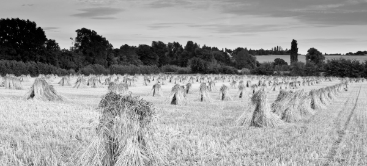

The Birth of Moshiach – Dependent on a P’sak Din
If you study Jewish and Chassidic history, you will see that nearly every stage of the hisgalus of the soul of Moshiach involved a p’sak din. * For Shavuos, we bring the story of one stage in the hisgalus of Moshiach: the marriage of Boaz to Rus the convert from whom Dovid Malka Meshicha came forth. * War over a p’sak.
By Yosef Yitzchok Moscowitz

The holiday of Shavuos is humorously called Chag HaMatzos in Chabad because it is a time when rabbanim-morei tzedek convene by the Rebbe. For one who looks and thinks about everything with Geula eyes, the mention of rabbanim brings to mind the famous p’sak din that the time for the Geula has arrived.
In the sicha of Parshas Mishpatim 5752, the Rebbe pointed to the fulfillment of the promise of “and they will grind swords into plowshares” as a proof that the p’sak din was having an influence in the world. The Rebbe called it, “a p’sak din from Sinai that permeated the world,” which was unprecedented.
R’ Yitzchok Lifsh, director of Tzach in Tzfas, is known for his work among rabbanim from all over the spectrum who, when shown the laws of chezkas Moshiach in the Rambam, sign to the p’sak din that declares that the Rebbe is a prophet and Moshiach.
In research that R’ Lifsh conducted not long ago, he discovered that Jewish and Chassidic history is replete with astonishing piskei din that led to later stages in the revelation of Moshiach.
For Shavuos, when many communities have the custom of reading Megillas Rus, we will tell the story of one stage of the hisgalus of Moshiach: the marriage of Boaz to Rus the convert from whom Dovid descended.
We will focus on the piskei dinim that were brought to the dayanim in the time of Boaz and later Dovid, and the decisive p’sak din which led to the birth of Dovid and the Malchus Beis Dovid from whence Moshiach comes.
BACKGROUND INFORMATION
Dovid’s birth was problematic from the start. In order to understand this we need to understand his genealogy and how his neshama came to the world. Although the story is probably familiar to you, it bears repeating in brief. Elimelech from Beis Lechem was a distinguished man from the tribe of Yehuda. He left Eretz Yisroel for Moav because of a famine. He went there with his wife Naomi and his two sons, Machlon and Kilyon. In the end, this descent turned out to be an ascent since Elimelech, unknowingly, went to Moav to bring out his daughter-in-law, Rus. She would be the great-grandmother of Dovid HaMelech from whom Moshiach comes.
When Naomi and Rus arrived in Beis Lechem it was the time of the barley harvest. Since they were poor, Rus went to collect grain and she went to the field of Boaz, a relative of Elimelech. When Boaz arrived at the field that day, he noticed Rus and asked about her. When he realized she had returned with Naomi, he told her to come and collect only in his field and he would provide her with drinks and tell his servants to treat her well. This was because of the chesed Rus did with Naomi.
In the evening, when Rus returned to Naomi, she told her mother-in-law about her day. Naomi rejoiced and told Rus to continue gathering in Boaz’s field since he was their relative. Rus continued to do so throughout the barley and wheat harvest.
Naomi then told Rus to go to the granary where Boaz was on guard and to lie down at his feet. When she did so, Boaz understood that heaven was indicating he should marry her in order to produce Moshiach. But there was an uncle of Boaz named Tov, who was a closer relative to Rus than Boaz and according to custom, he had the right to redeem Rus and marry her.
So Boaz convened a beis din and in front of them asked Tov if he wants to marry Rus. When Tov declined, and Rus removed his shoe in the chalitza ceremony, it became possible for Boaz to marry her.
A HALACHIC PROBLEM
At this point, another problem cropped up, more serious than the former. Since Rus was a Moabite, the prohibition in the Torah of “an Amonite and a Moabite cannot enter the congregation of G-d … forever,” applied. How could Boaz marry her?
Boaz convened a beis din to pasken the historical p’sak that would permit Rus to enter the congregation of Hashem. The Sanhedrin examined the Halacha and stated that the Torah was referring only to the males of Amon and Moav. They brought proof from the fact that the reason they are forbidden from entering the Jewish people is because they did not greet us with food and water when we left Egypt. Since it is not the practice of women to go out and greet wayfarers with food and drink, the prohibition does not apply to them.
However, despite this clear p’sak din, the nation did not fully accept it, to the point that the closer relative was afraid to marry Rus and said he couldn’t, lest he mar his heritage.
The day after the p’sak din, Boaz went back before the elders and the nation, “you are witnesses today,” that the Halacha is “a Moabite male and not a female, an Amonite male and not a female,” and he married Rus. Still, despite the p’sak din, many fine people looked askance at this. “It’s one thing for Rus to be allowed to marry into our people, but that she should marry the gadol ha’dor?!”
That day, a miracle occurred and although Boaz was an old man of eighty, Rus conceived a child.
BOAZ DIED AND THE SAGES SECOND-GUESSED THE P’SAK
The joy did not last even one day, for on the night of their marriage, Boaz passed away. In the Seifer HaTodaah (Book of Our Heritage; by the way, the Rebbe encouraged the printing of this book and even gave a loan to have it printed. It was only after the book was reprinted several times that the Rebbe agreed to accept repayment of the loan), he brings a fascinating description as follows:
Boaz did not have any years inscribed in the Book of Life but Hashem delayed [his death] until he married Rus in order to bring Dovid forth from him. As soon as Boaz carried out the will of Hashem, he completed his rectification and died immediately. But there were those who misinterpreted his death and thought it was a punishment for marrying a Moabite and causing a “blemish” on his family lineage. There were those who compared his punishment with that received by Machlon and Kilyon who married Moabite women.
The light of Moshiach was obscured. Many people hoped no child would emerge from this union, but Hashem was anticipating this child, when would he come forth?
When Rus had a son, we do not find that the elders of the Sanhedrin rejoiced; just the women. Naomi’s neighbors rejoiced and it was they who called him Oveid. Where did all the sages and elders disappear, those who had previously blessed Boaz? Some say that they were frightened when Boaz died immediately after marrying Rus. They feared they had erred in their p’sak din.
It was only when Oveid grew up and they saw he was righteous that they felt relieved and said: If there was, G-d forbid, something invalid in this marriage, it would not have been possible for such a tzaddik as Oveid to be born.
This view was bolstered with the birth of Yishai and everyone saw he was holy and never sinned. Then they said: Indeed, the spirit of G-d spoke in Boaz and the elders when they allowed Rus to enter the Jewish nation.
Yishai the tzaddik is enumerated among the singular individuals who never sinned. Yishai is from the root yeshus, i.e. from his part, he had the ability to exist in this world even now, but he died because of the sin of Adam who brought death to the world.
Only four people died for this reason alone, as a direct result of the serpent who seduced Chava and Adam with the Tree of Knowledge of Good and Evil. These four people were perfectly righteous and therefore did not need to die, but they died anyway because of the sin of Adam whose action brought death to humanity. The four are: Binyamin, Amram, Yishai and Kilav the son of Dovid. Oveid had this righteous son Yishai, since he served Hashem with his whole heart which is why he was called Oveid.
The Seifer HaTodaah goes on to say that it was in the merit of righteous women that we have the malchus Dovid:
Since the women took care of Rus and her son and blessed him, Hashem put ruach ha’kodesh in their mouths and made all their words part of Torah which was written in the book of the Megilla, “and the [female] neighbors gave him a name, saying, a son was born to Naomi (i.e. his pedigree is from Naomi who comes from Nachshon the son of Aminadav, and not from Moav) and they called him Oveid (an acronym for Od Ben – Dovid, i.e. this son will give birth to another son)” and the ruach ha’kodesh said, amen, may it be as you say, “he is the father of Yishai who is the father of Dovid.”
YISHAI FEARS
A MISTAKEN P’SAK
The years went by, Dovid was born, but the road to the kingdom was not simple or smooth. In the Midrash it says that after Yishai already had seven sons, he began to worry about his pedigree. Was the p’sak that a Moabite male is forbidden but a Moabite female is allowed correct? Since he was not sure, he separated from his wife (although he did not divorce her), because maybe, as a descendant of a Moabite, he himself was not allowed to marry a Jewish woman.
After he was separated from her for a number of years, he did not think it was a good thing to live without a wife, as it says in Halacha that a man is not supposed to dwell without a wife. So he took his maidservant and said to her, “You are freed on condition that if the Torah meant a Moabite male and female, you are a maid and I am the grandson of Rus the Moabite and I am allowed to marry a maid. And if the Torah means a Moabite male and not a female, then you are freed and a Jew can marry you.”
In this way, he sought to ensure that his children would be kosher and could marry into the Jewish nation.
Yishai’s wife, Nitzeves bas Adiel, was a righteous woman and she was very upset that her righteous husband had separated from her. When the maid saw Nitzeves’ longing for her husband, she gave her the code just as Rochel did for her sister Leah. On the night of the wedding, Nitzeves prayed and went in place of her maid and she conceived. Yishai remained unaware of this. Dovid was born of this union.
When the sons of Yishai saw that their mother was pregnant despite the fact that their father had separated from her, they told their father that their mother had had an illicit relationship and should be killed along with the fetus.
Yishai then felt very bad and he told his sons: Let her give birth so people won’t mock you and say that you too are mamzerim. Instead, Yishai recommended that Dovid be disdained and distanced so he would not marry into the Jewish people, but they would not broadcast his illegitimacy. In order to avoid shame, Dovid was sent to shepherd the sheep far from home. Maybe he would even be attacked by wild animals…
All seven sons of Yishai followed in his footsteps and were considered highly distinguished by all. Only Dovid was despised by his brothers and father who distanced him. Even though Dovid was already 28 years old, his father still referred to him as the “little one,” as he said to Shmuel, for Dovid was despised for being a mamzer.
Dovid was the black sheep of the household. People did not know why Dovid was kept away from everyone else and they imagined all kinds of things which were not true. He was blamed for any theft or bad thing that occurred.
However, all this was part of the cover-up, for Satan works hard to indict great souls like these. The birth of Dovid was the last big cover-up before the great revelation; the revelation of the light of Moshiach and the anointing of Dovid as king over all Israel forever. The secret of Dovid was concealed from his own father and brothers and from everyone in his generation and even from Shmuel the Navi who is compared to Moshe and Aharon together.
SHMUEL’S
BEIS DIN PASKENS
After Dovid killed Golyas, Shaul inquired about this young man and his background to ascertain whether he was fit for kingship. Doeg HaAdomi responded, “Before you ask whether he is fit to rule, ask whether he is fit to enter the congregation or not, since he descends from Rus the Moabite.”
A short while before, Dovid asked Shmuel to pasken once again, “A Moabite male and not a female.” The p’sak din was reissued from Shmuel’s beis din, but as expected there was opposition to the p’sak din. In the commentary of the Radak it says that Avner ben Ner read the p’sak din before Shaul, which (almost) closed the discussion about his lineage for all time.
And when the time came that the p’sak din was reissued, Hashem told Shmuel, “Arise and anoint him for he is the one,” referring to Dovid who would be king over Yisroel. Hashem promised that this would be an eternal kingdom until the coming of the righteous redeemer, Moshiach.
Beis Moshiach (staff). "The Birth of Moshiach – Dependent on a P’sak Din." Beis Moshiach, no. 928 (May 29, 2014).